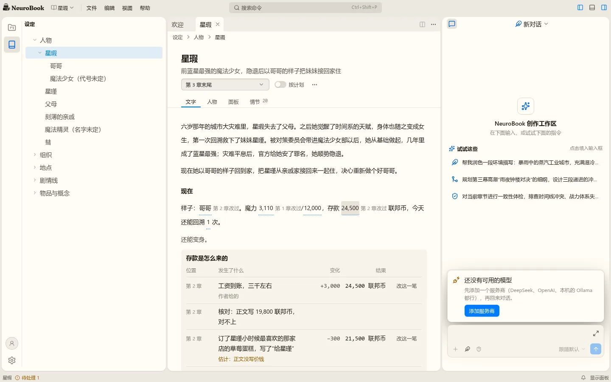
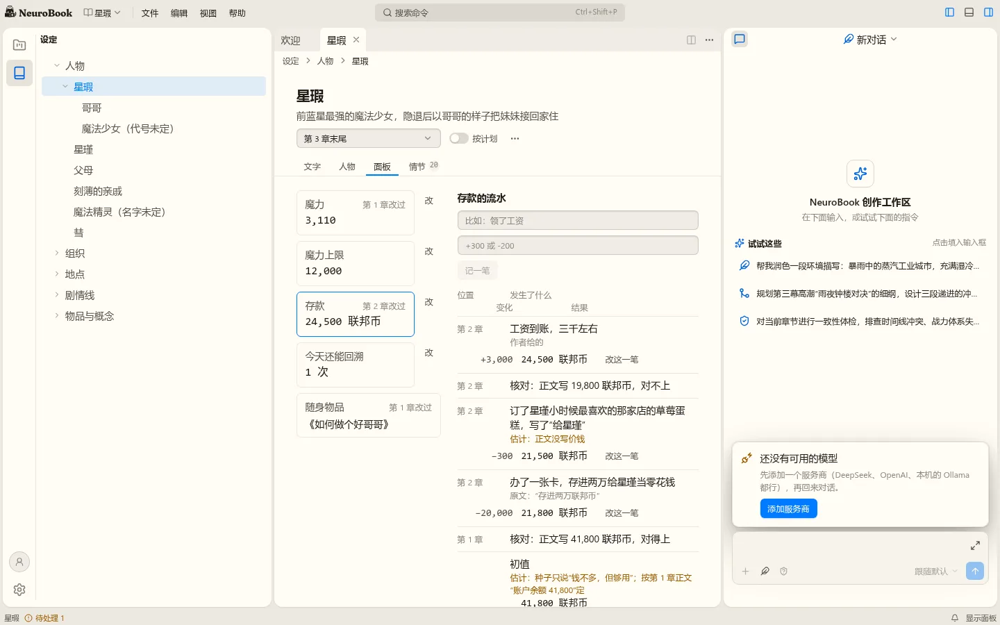
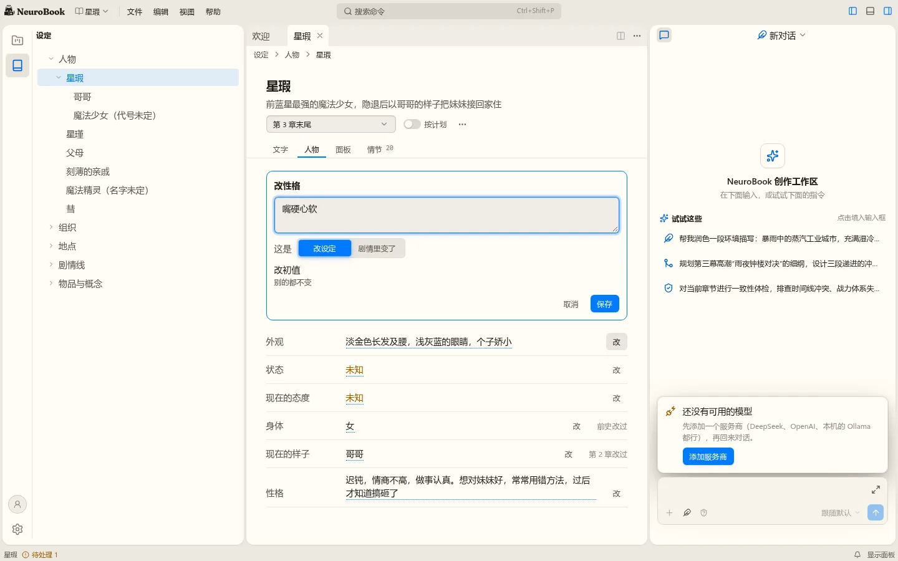
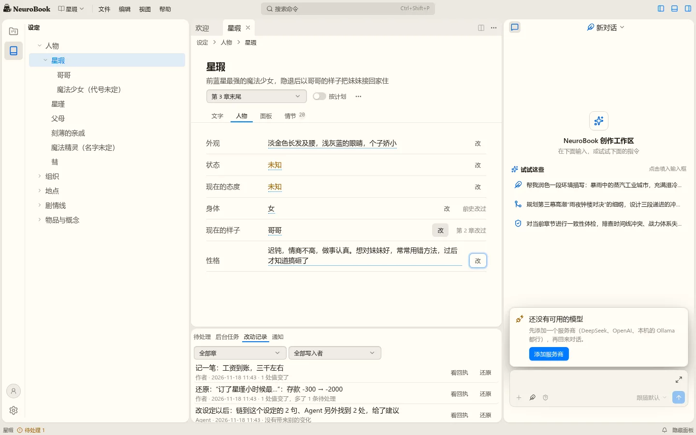
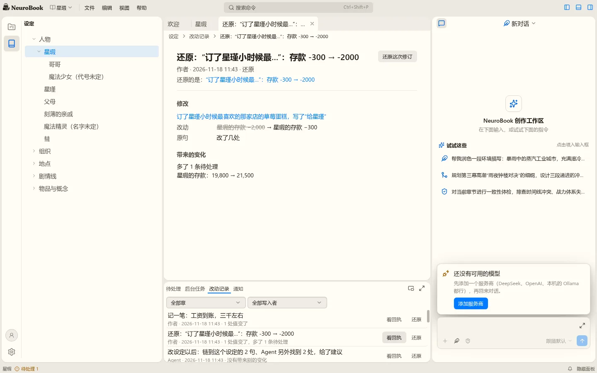
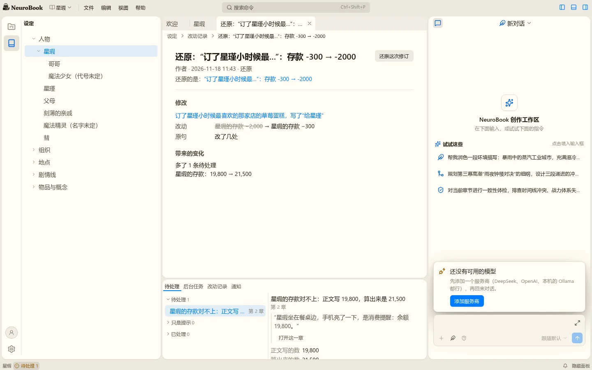
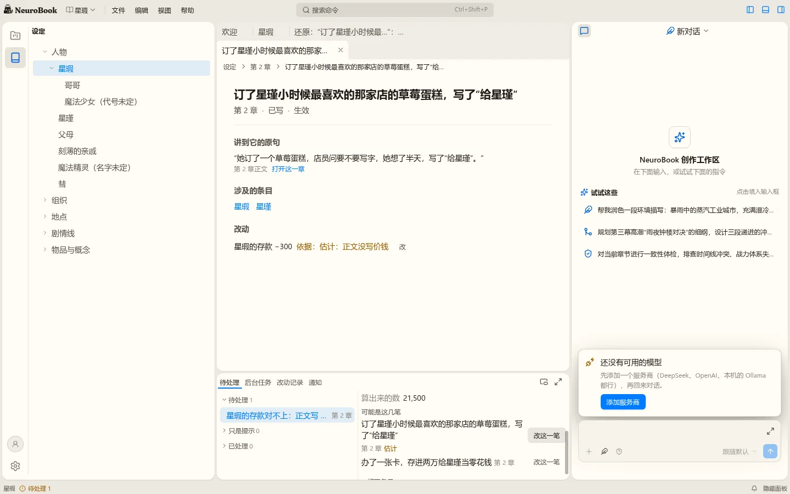
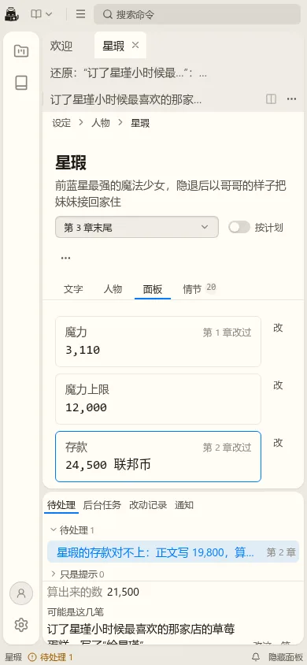

作者界面第一批（设定侧）：收口截图
w00039 t31 S8，2026-11-18。开发服务加脚本新生成的星瑕样本作品，本机 Chrome，亮色主题，1440×900 与 390×844。走查期间控制台没有错误，390 宽时页面没有横向滚动。端到端的验收由 e2e/canon-author.e2e.ts 守着（验收 1、2、3、5 与在改动记录里还原，五个场景都过）。
条目页：文字里的值与它的来历

侧栏“设定”里马甲挂在本体下面；面包屑“设定 › 人物 › 星瑕”；位置缺省是最新一章末尾。点文字里的“存款”，下面列出它是怎么来的：估计的那一笔用警告色写依据，核对点写对没对上，变更的每一步可以“改这一笔”。
面板分页：值卡与流水

值卡写“第 N 章改过”，常显的“改”；选中存款，右边是记一笔的输入与流水（同来历，按页）。
就地改的确认条

改一个只在初值设过的字段：停一下就预览写回哪里（“改初值”）与带来的变化，再点保存。
改动记录与回执

底部面板的“改动记录”：从新到旧，每行写标题、谁、什么时候与带来的变化的一句摘要，带“看回执”“还原”，可按章、按写入者筛。底部面板的入口条（待处理、后台任务、改动记录、通知）随 master 合进来。

回执页：改了什么（字段的改前改后）、带来的变化；它是一次还原时写还原的是哪一次。
待处理与变更详情

状态栏“待处理 1”点进去：选中“星瑕的存款对不上”，详情有原句与“打开这一章”、正文写的与算出来的数、嫌疑的几笔（估计的在前）。

“改这一笔”开出那条变更的详情页：文字、安放、原句、每一处改动与依据，数的改动旁有“改”。
390 宽

页头换行：标题与简介在上，位置选择与“按计划”在下一行；值卡一列；底部面板的待处理上下排；没有横向滚动。编辑区的标签条在窄屏换成两行是编辑器原有的行为。